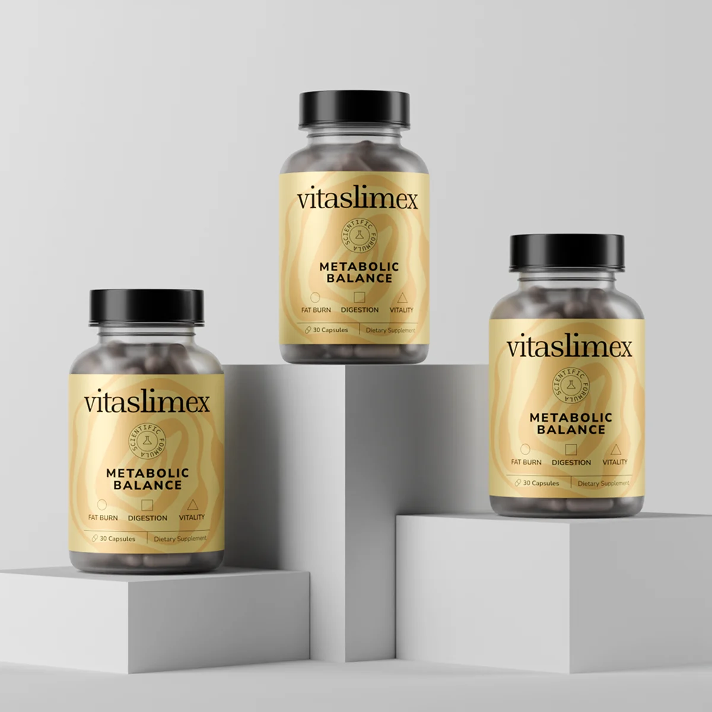

Vitaslimex avis : la gélule qui relance votre métabolisme
Pas de shaker, pas de programme à suivre, pas de comprimés à avaler trois fois par jour. Une gélule le matin avec un verre d’eau, et une formule de 11 ingrédients d’origine naturelle qui agit là où les régimes échouent le plus souvent : les fringales, le métabolisme au ralenti et le ventre gonflé.


Vitaslimex, c’est quoi ?
Vitaslimex Metabolic Balance est un complément alimentaire en gélules. Plutôt que de miser sur un seul ingrédient « miracle », la formule associe 11 composants d’origine naturelle, chacun avec un rôle précis : glycémie, métabolisme ou digestion.
Une gélule par jour, c’est tout le programme. Vitaslimex s’adresse aux adultes qui veulent soutenir leur métabolisme au quotidien sans réorganiser leur vie. Ce n’est pas un médicament et il ne remplace pas une alimentation équilibrée – il aide simplement à s’y tenir.
Onze ingrédients, un seul objectif
Thé vert, vinaigre de cidre, berbérine, ginseng… Ensemble, ils agissent à la fois sur les fringales, la combustion des graisses et la digestion.
Le chrome, un atout reconnu
Le chrome fait partie des nutriments dont le rôle sur le métabolisme et la glycémie est officiellement reconnu, avec une allégation de santé autorisée dans l’UE.
De l’énergie sans stimulants agressifs
Pas de dose massive de caféine comme dans les brûle-graisses classiques : le ginseng et le thé vert apportent une énergie qui dure, sans coup de barre l’après-midi.
Ce que Vitaslimex change au quotidien
Selon le fabricant, Vitaslimex agit en harmonie avec votre corps, pas contre lui : il soutient le métabolisme, freine les fringales, équilibre la glycémie et facilite la digestion – pour des progrès qui durent.
Glycémie stable, moins de fringales
Le chrome contribue à un métabolisme normal des macronutriments et au maintien d’une glycémie normale. La berbérine, le ginseng et le resvératrol complètent son action : l’envie de grignoter se fait plus rare.
Allégation autorisée dans l’UEPlus d’énergie, moins de fatigue
Le ginseng coréen et l’extrait de thé vert aident à lutter contre la fatigue, améliorent la circulation et réduisent le stress oxydatif – pour garder la forme toute la journée.
Un métabolisme plus actif
Thé vert, poivre de Cayenne et orange amère s’associent pour activer la thermogenèse et favoriser une combustion des graisses plus efficace.
Un ventre plus léger
Le gingembre, le vinaigre de cidre et la cannelle apaisent l’estomac, facilitent la digestion et limitent les ballonnements après les repas.
Quand une cure de Vitaslimex est-elle utile ?
Ce sont souvent de petits signaux du quotidien qui font la différence. Vous vous reconnaissez ?
L’après-midi, vous êtes à plat. Rendez-vous, trajets, famille… et à 16 heures, le réservoir est vide. Le ginseng et le thé vert aident à surmonter la fatigue, sans la chute qui suit les boissons énergisantes.
La balance ne bouge presque plus. Ce qui marchait tout seul avant ne fonctionne plus. Vitaslimex agit sur le métabolisme et favorise une combustion des graisses plus efficace.
Les fringales l’emportent chaque soir. Quand la glycémie baisse, l’envie de chocolat se réveille. Chrome, berbérine et ginseng aident à garder une glycémie stable – l’envie de sucré s’apaise.
Votre ventre est souvent gonflé. Lourdeurs et digestion lente après les repas ? Gingembre, vinaigre de cidre et cannelle vous offrent un ventre nettement plus léger.
Vous avez déjà abandonné des régimes stricts. Les programmes pleins d’interdits tiennent rarement plus de deux semaines. Une cure d’un mois avec Vitaslimex offre un cadre clair et réaliste, que l’on peut prolonger à tout moment.
Vous voulez faire simple. Une gélule, un verre d’eau. Rien à peser, rien à préparer, rien à compter – plus la routine est simple, plus on s’y tient.
Une formule naturelle, des dosages affichés en toute transparence
Dix extraits de plantes et du chrome, rien de plus. Tous les dosages correspondent à une gélule – la dose journalière complète, sans « complexe » mystérieux ni chiffres cachés.
Les extraits de plantes
Le micronutriment
Ce que vous ne trouverez pas dans Vitaslimex
La formule renonce volontairement à tout ce qui n’impressionne que sur l’étiquette.
Vitaslimex : mode d’emploi
La routine la plus simple qui soit – car seule une habitude facile à tenir donne des résultats.
Une gélule par jour
Avec un grand verre d’eau, de préférence le matin pendant un repas. L’estomac reste ainsi tranquille.
Un moment fixe
Un flacon, 30 gélules, un mois. Le plus simple : l’associer au petit-déjeuner ou au premier café. Un oubli ? Reprenez normalement le lendemain, sans doubler la dose.
La régularité
Laissez au moins un mois entier à la cure avant de juger. Beaucoup de clients prévoient directement trois mois – c’est tout l’intérêt du lot de 3.
Fabriqué dans l’Union européenne
Vitaslimex est produit dans une usine située dans l’UE. Les ingrédients sont d’origine naturelle et chaque gélule est fabriquée pour garantir pureté et efficacité – sans additifs nocifs.
La commande passe par un paiement sécurisé SSL, la livraison est rapide et offerte, et le service client répond 24 h/24.

Ce qui distingue Vitaslimex des autres gélules minceur
En rayon, des dizaines de produits pour le métabolisme se ressemblent à s’y méprendre. Quatre points font la différence.
Les avis clients sur Vitaslimex
Ce que les clients remarquent en premier, c’est rarement la balance – c’est le quotidien : plus d’énergie, moins de fringales, un ventre plus léger. Les progrès sur la silhouette suivent.
« Je me sens plus en forme et pleine de confiance ! »
« Après des années de lutte contre mon poids, j’ai enfin obtenu les résultats que j’espérais avec Vitaslimex. »
« J’adore l’action naturelle de Vitaslimex. Sans le moindre effet indésirable, je recommande vivement ! »
« Vitaslimex a changé ma santé et ma vie, et ce n’est que le début ! »
« Je ne suis plus ballonnée ni fatiguée. Vitaslimex a boosté mon métabolisme comme jamais ! »
« Vitaslimex est ma meilleure décision de l’année – j’ai enfin pu atteindre mes objectifs de perte de poids. »
Questions fréquentes sur Vitaslimex
Les réponses aux questions que l’on nous pose le plus souvent avant de commencer.
Comment prendre Vitaslimex ?
Une gélule par jour avec un grand verre d’eau, de préférence le matin au cours d’un repas.
J’ai oublié une gélule, que faire ?
Reprenez normalement le lendemain. Ne doublez pas la dose pour rattraper l’oubli.
Faut-il changer son alimentation ?
Non, aucun régime n’est nécessaire. Vitaslimex complète une alimentation équilibrée – en mangeant varié et en bougeant un peu, vous tirez le meilleur de la cure.
Au bout de combien de temps voit-on des résultats ?
Selon le fabricant, beaucoup de personnes se sentent plus énergiques après quelques jours. La baisse des fringales et un ventre plus léger suivent au cours des premières semaines – il faut juger la cure après un mois complet.
Combien de temps dure la cure ?
Un flacon de 30 gélules dure exactement un mois. La plupart des clients optent directement pour le lot de 3 flacons, soit trois mois – c’est aussi la formule la plus avantageuse.
Vitaslimex contient-il de la caféine ou des stimulants ?
Aucun booster de caféine ni stimulant agressif. La petite quantité de caféine naturelle provient de l’extrait de thé vert – sans pic d’énergie ni coup de barre l’après-midi.
Où acheter Vitaslimex : pharmacie, parapharmacie ou Amazon ?
Non. Vitaslimex est vendu sur sa boutique officielle – c’est le seul endroit où vous obtenez l’original avec livraison offerte et garantie satisfait ou remboursé de 30 jours.
Quel est le prix de Vitaslimex ?
Les prix du moment et les promotions en cours sont affichés sur la boutique officielle ; avec le lot de 3 flacons, Vitaslimex revient nettement moins cher.
Comment fonctionne la garantie satisfait ou remboursé ?
Vous disposez de 30 jours pour essayer Vitaslimex. Si vous n’êtes pas satisfait, vous êtes remboursé.
Vitaslimex a-t-il des effets secondaires ?
Vitaslimex mise sur des ingrédients d’origine naturelle, sans stimulants agressifs. Comme avec tout complément, l’estomac peut être un peu sensible au début – une prise pendant le repas permet de l’éviter.
Traitement, grossesse, allaitement : est-ce compatible ?
Dans ces situations, parlez-en à votre médecin avant de commencer. Vitaslimex n’est pas recommandé aux femmes enceintes ou allaitantes ni aux moins de 18 ans.
Où Vitaslimex est-il fabriqué ?
Dans une usine située dans l’Union européenne, à partir d’ingrédients d’origine naturelle et sans additifs nocifs.
Comment conserver le flacon ?
Bien fermé, au sec, à l’abri de la chaleur et de la lumière, et hors de portée des enfants.
Envie de commencer dès aujourd’hui ?
Un flacon, 30 gélules, 30 jours – une habitude simple qui ne vous demande enfin rien d’impossible.
Commander Vitaslimex